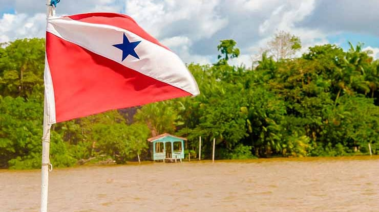

O Pará é o segundo maior estado do Brasil em extensão territorial, localizado na Região Norte, com capital em Belém. Tem cerca de 8,5 milhões de habitantes e é cortado pelo rio Amazonas. Sua economia é baseada na mineração (ferro, bauxita), agropecuária, extrativismo e exportação de produtos como soja e madeira. O estado tem grande diversidade cultural, influenciada por povos indígenas, africanos e portugueses, sendo o Círio de Nazaré uma das maiores festas religiosas do país. O Pará é uma das principais portas de entrada da Amazônia brasileira.
 Voltar